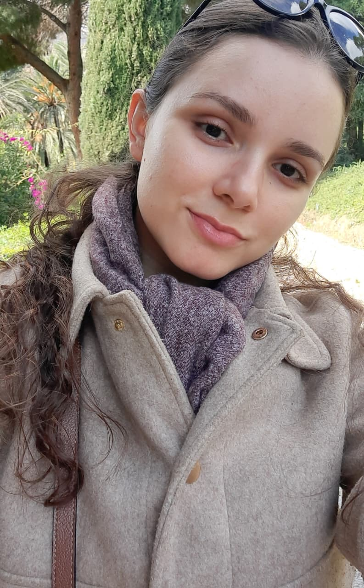

The Network
Leadership
 🇨🇴🇧🇷🇮🇹
🇨🇴🇧🇷🇮🇹
Abraham David Guerra Ospino
CEO & Founder
Abraham is a Microbiologist and Bioinformatician, and a Master’s candidate at UNESP, Brazil. He is currently conducting an international research exchange at the University of Padua (UNIPD), Italy.
His research specializes in pangenomics and the study of complex microbial ecosystems, focusing on the genus Utricularia.
His research specializes in pangenomics and the study of complex microbial ecosystems, focusing on the genus Utricularia.
 🇧🇷
🇧🇷
Nilo Corrêa de Mello Júnior Ricardo
Lead Researcher
Nilo is an Agronomist and a PhD candidate in Plant Production at UNESP, Brazil. He holds a Master’s degree in Irrigated Horticulture and has specialized in Data Science.
His work focuses on postharvest physiology, using Near-Infrared (NIR) spectroscopy and machine learning to predict fruit quality.
His work focuses on postharvest physiology, using Near-Infrared (NIR) spectroscopy and machine learning to predict fruit quality.
Associated Researchers
 🇨🇴🇧🇷
🇨🇴🇧🇷
Lizeth Fernanda Banguero Micolta
Associate Researcher
Biologist from the University of Caldas and member of GEBIOME. Her work integrates molecular biology, epidemiology, and the One Health framework.
Focuses on the molecular detection of zoonotic pathogens like Bartonella spp. and Rickettsia spp. in Northeastern Brazil.
Focuses on the molecular detection of zoonotic pathogens like Bartonella spp. and Rickettsia spp. in Northeastern Brazil.
🇵🇷🇨🇴
Natally S. Vidal Figueroa
Associate Researcher
Colombian biologist and Master’s student at UPRM. Her research integrates bioremediation and nanotechnology through a biochemical approach.
Specializes in microbiological analysis of environments contaminated by petrochemicals and plastics, using SERS and SEIRA techniques.
Specializes in microbiological analysis of environments contaminated by petrochemicals and plastics, using SERS and SEIRA techniques.

🇧🇷Jaqueline Cristina Galiardo
Associate Researcher
Doctoral candidate in Food and Nutrition at UNESP, Brazil. Her research at the LPP focuses on personalized probiotic therapy and microbiota modulation.
Explores the consequences of exhaustive physical exercise, with studies in animal models of DSS-induced colitis and obesity.
Explores the consequences of exhaustive physical exercise, with studies in animal models of DSS-induced colitis and obesity.
 🇨🇴
🇨🇴
Dana Páez Niño
Associate Researcher
Microbiologist from Universidad Simón Bolívar with emphasis on Biotechnology. Expert in DNA extraction protocols using nanotechnology and microbial characterization.
Her research focuses on nutrient-solubilizing bacteria associated with Utricularia gibba and biotechnological applications for sustainable agriculture.
Her research focuses on nutrient-solubilizing bacteria associated with Utricularia gibba and biotechnological applications for sustainable agriculture.
 🇧🇷
🇧🇷
Elisângela Pulcini Jacob
Associate Researcher
Master's student in Business Administration at UNESP/FCAV. Specialist in Supply Chain Management in Agribusiness, Marketing, and Branding.
Her work integrates a multidisciplinary vision for innovation and value creation in agribusiness systems and distance education processes.
Her work integrates a multidisciplinary vision for innovation and value creation in agribusiness systems and distance education processes.
 🇵🇰🇮🇩🇰🇷🇧🇷
🇵🇰🇮🇩🇰🇷🇧🇷
Shahzad Shoukat
Associate Researcher
Doctoral researcher at the Aquaculture Center of UNESP (CAUNESP), Brazil. His research at the Laboratory of Microbiology and Parasitology of Aquatic Organisms (LAPOA) focuses on immersion and injection vaccines for Columnaris-causing bacteria in Nile Tilapia.
With an international trajectory across Pakistan, Indonesia, and South Korea, he specializes in microbiology, immunology, and aquatic health, contributing to global scientific networks in aquaculture and infectious diseases.
With an international trajectory across Pakistan, Indonesia, and South Korea, he specializes in microbiology, immunology, and aquatic health, contributing to global scientific networks in aquaculture and infectious diseases.